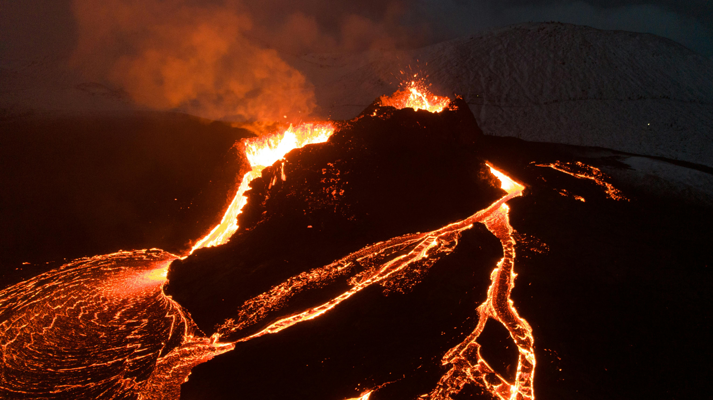

Volcanoes represent one of Earth's most powerful geological forces, shaping landscapes and influencing climate throughout our planet's history. These fiery mountains form at boundaries where tectonic plates collide or separate, and at hot spots where plumes of molten rock rise from deep within the mantle. The 1883 eruption of Krakatoa in Indonesia was so powerful it could be heard 3,000 miles away and lowered global temperatures by 1.2°C for five years by injecting ash into the atmosphere.
Volcanic activity creates some of our most fertile soils, which is why populations often cluster around volcanoes despite the risks. The rich volcanic soils of mountainous regions like Java and parts of Italy support intensive agriculture. Interestingly, the same processes that build volcanoes also create valuable mineral deposits and geothermal energy sources.
The Lifecycle of Volcanoes
Volcanoes go through distinct stages of activity:
- Active: Currently erupting or showing signs of unrest
- Dormant: Not currently active but could erupt again
- Extinct: No eruption in recorded history
Some volcanoes like those in Hawaii erupt relatively gently, while others like Mount Vesuvius can produce catastrophic explosive eruptions. The type of eruption depends on the magma's viscosity - runny basalt lava creates oceanic shield volcanoes, while sticky rhyolite lava builds steep stratovolcanoes prone to violent explosions.